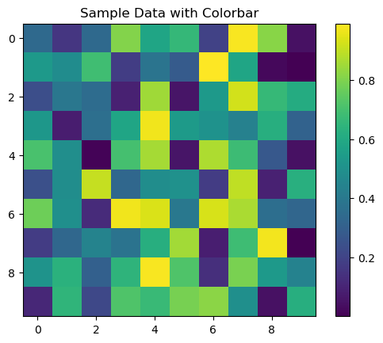

# Display output of plots directly in Notebook
%matplotlib inline
import warnings
warnings.filterwarnings("ignore")
import intake
import numpy as np
import pandas as pd
import xarray as xr
catalog = intake.open_esm_datastore(
'https://raw.githubusercontent.com/NCAR/cesm2-le-aws/main/intake-catalogs/aws-cesm2-le.json'
)
catalog
aws-cesm2-le catalog with 40 dataset(s) from 322 asset(s):
| unique | |
|---|---|
| variable | 53 |
| long_name | 51 |
| component | 4 |
| experiment | 2 |
| forcing_variant | 2 |
| frequency | 3 |
| vertical_levels | 3 |
| spatial_domain | 3 |
| units | 20 |
| start_time | 4 |
| end_time | 7 |
| path | 313 |
| derived_variable | 0 |
catalog.df.to_csv('namelist.csv')
catalog = intake.open_esm_datastore(
'https://ncar-cesm-lens.s3-us-west-2.amazonaws.com/catalogs/aws-cesm1-le.json'
)
catalog
aws-cesm1-le catalog with 56 dataset(s) from 442 asset(s):
| unique | |
|---|---|
| variable | 78 |
| long_name | 75 |
| component | 5 |
| experiment | 4 |
| frequency | 6 |
| vertical_levels | 3 |
| spatial_domain | 5 |
| units | 25 |
| start_time | 12 |
| end_time | 13 |
| path | 427 |
| derived_variable | 0 |
catalog = intake.open_esm_datastore(
'https://ncar-cesm-lens.s3-us-west-2.amazonaws.com/catalogs/aws-cesm1-le.json'
)
catalog
aws-cesm1-le catalog with 56 dataset(s) from 442 asset(s):
| unique | |
|---|---|
| variable | 78 |
| long_name | 75 |
| component | 5 |
| experiment | 4 |
| frequency | 6 |
| vertical_levels | 3 |
| spatial_domain | 5 |
| units | 25 |
| start_time | 12 |
| end_time | 13 |
| path | 427 |
| derived_variable | 0 |
catalog.df.to_csv('namelistCESM1.csv')
import xarray as xr
import numpy as np
import climdex.utils as cutils
import climdex.precipitation as pdex
indices = pdex.indices(time_dim='time')
# compute total monthly precipitation;
# your data should be daily or sub-daily time scale
#ptot = indices.PRECC
indices
<climdex.precipitation.PrecipitationIndices at 0x7f81f8864430>
#indices = pdex.indices(time_dim='time')
# compute total monthly precipitation;
# your data should be daily or sub-daily time scale
#ptot = indices.prcptot(data, period='1M')
catalog_subset = catalog.search(variable='TREFHT', frequency='daily')
catalog_subset
aws-cesm1-le catalog with 4 dataset(s) from 4 asset(s):
| unique | |
|---|---|
| variable | 1 |
| long_name | 1 |
| component | 1 |
| experiment | 4 |
| frequency | 1 |
| vertical_levels | 1 |
| spatial_domain | 1 |
| units | 1 |
| start_time | 4 |
| end_time | 4 |
| path | 4 |
| derived_variable | 0 |
catalog_subset.df
| variable | long_name | component | experiment | frequency | vertical_levels | spatial_domain | units | start_time | end_time | path | |
|---|---|---|---|---|---|---|---|---|---|---|---|
| 0 | TREFHT | reference height temperature | atm | 20C | daily | 1.0 | global | K | 1920-01-01 12:00:00 | 2005-12-31 12:00:00 | s3://ncar-cesm-lens/atm/daily/cesmLE-20C-TREFH... |
| 1 | TREFHT | reference height temperature | atm | CTRL | daily | 1.0 | global | K | 0402-01-01 12:00:00 | 2200-12-31 12:00:00 | s3://ncar-cesm-lens/atm/daily/cesmLE-CTRL-TREF... |
| 2 | TREFHT | reference height temperature | atm | HIST | daily | 1.0 | global | K | 1850-01-01 12:00:00 | 1919-12-31 12:00:00 | s3://ncar-cesm-lens/atm/daily/cesmLE-HIST-TREF... |
| 3 | TREFHT | reference height temperature | atm | RCP85 | daily | 1.0 | global | K | 2006-01-01 12:00:00 | 2100-12-31 12:00:00 | s3://ncar-cesm-lens/atm/daily/cesmLE-RCP85-TRE... |
dsets = catalog_subset.to_dataset_dict(storage_options={'anon':True})
--> The keys in the returned dictionary of datasets are constructed as follows:
'component.experiment.frequency'
100.00% [4/4 00:03<00:00]
#indices = pdex.indices(time_dim='time')
# compute total monthly precipitation;
# your data should be daily or sub-daily time scale
#ptot = indices.TREFHT(data, period='1M')
dsets
{'atm.HIST.daily': <xarray.Dataset> Size: 6GB
Dimensions: (time: 25550, lat: 192, lon: 288, nbnd: 2)
Coordinates:
* lat (lat) float64 2kB -90.0 -89.06 -88.12 -87.17 ... 88.12 89.06 90.0
* lon (lon) float64 2kB 0.0 1.25 2.5 3.75 ... 355.0 356.2 357.5 358.8
member_id int64 8B ...
* time (time) object 204kB 1850-01-01 12:00:00 ... 1919-12-31 12:00:00
time_bnds (time, nbnd) object 409kB dask.array<chunksize=(12775, 2), meta=np.ndarray>
Dimensions without coordinates: nbnd
Data variables:
TREFHT (time, lat, lon) float32 6GB dask.array<chunksize=(576, 192, 288), meta=np.ndarray>
Attributes: (12/25)
Conventions: CF-1.0
NCO: 4.4.2
Version: $Name$
important_note: This data is part of the project 'Blin...
initial_file: b.e11.B20TRC5CNBDRD.f09_g16.001.cam.i....
logname: mudryk
... ...
intake_esm_attrs:units: K
intake_esm_attrs:start_time: 1850-01-01 12:00:00
intake_esm_attrs:end_time: 1919-12-31 12:00:00
intake_esm_attrs:path: s3://ncar-cesm-lens/atm/daily/cesmLE-H...
intake_esm_attrs:_data_format_: zarr
intake_esm_dataset_key: atm.HIST.daily,
'atm.20C.daily': <xarray.Dataset> Size: 278GB
Dimensions: (member_id: 40, time: 31390, lat: 192, lon: 288, nbnd: 2)
Coordinates:
* lat (lat) float64 2kB -90.0 -89.06 -88.12 -87.17 ... 88.12 89.06 90.0
* lon (lon) float64 2kB 0.0 1.25 2.5 3.75 ... 355.0 356.2 357.5 358.8
* member_id (member_id) int64 320B 1 2 3 4 5 6 7 ... 35 101 102 103 104 105
* time (time) object 251kB 1920-01-01 12:00:00 ... 2005-12-31 12:00:00
time_bnds (time, nbnd) object 502kB dask.array<chunksize=(15695, 2), meta=np.ndarray>
Dimensions without coordinates: nbnd
Data variables:
TREFHT (member_id, time, lat, lon) float32 278GB dask.array<chunksize=(1, 576, 192, 288), meta=np.ndarray>
Attributes: (12/25)
Conventions: CF-1.0
NCO: 4.4.2
Version: $Name$
important_note: This data is part of the project 'Blin...
initial_file: b.e11.B20TRC5CNBDRD.f09_g16.001.cam.i....
logname: mudryk
... ...
intake_esm_attrs:units: K
intake_esm_attrs:start_time: 1920-01-01 12:00:00
intake_esm_attrs:end_time: 2005-12-31 12:00:00
intake_esm_attrs:path: s3://ncar-cesm-lens/atm/daily/cesmLE-2...
intake_esm_attrs:_data_format_: zarr
intake_esm_dataset_key: atm.20C.daily,
'atm.RCP85.daily': <xarray.Dataset> Size: 307GB
Dimensions: (member_id: 40, time: 34675, lat: 192, lon: 288, nbnd: 2)
Coordinates:
* lat (lat) float64 2kB -90.0 -89.06 -88.12 -87.17 ... 88.12 89.06 90.0
* lon (lon) float64 2kB 0.0 1.25 2.5 3.75 ... 355.0 356.2 357.5 358.8
* member_id (member_id) int64 320B 1 2 3 4 5 6 7 ... 35 101 102 103 104 105
* time (time) object 277kB 2006-01-01 12:00:00 ... 2100-12-31 12:00:00
time_bnds (time, nbnd) object 555kB dask.array<chunksize=(17338, 2), meta=np.ndarray>
Dimensions without coordinates: nbnd
Data variables:
TREFHT (member_id, time, lat, lon) float32 307GB dask.array<chunksize=(1, 576, 192, 288), meta=np.ndarray>
Attributes: (12/26)
Conventions: CF-1.0
NCO: 4.4.2
Version: $Name$
host: tcs-f02n07
important_note: This data is part of the project 'Blin...
initial_file: b.e11.B20TRC5CNBDRD.f09_g16.105.cam.i....
... ...
intake_esm_attrs:units: K
intake_esm_attrs:start_time: 2006-01-01 12:00:00
intake_esm_attrs:end_time: 2100-12-31 12:00:00
intake_esm_attrs:path: s3://ncar-cesm-lens/atm/daily/cesmLE-R...
intake_esm_attrs:_data_format_: zarr
intake_esm_dataset_key: atm.RCP85.daily,
'atm.CTRL.daily': <xarray.Dataset> Size: 145GB
Dimensions: (member_id: 1, time: 656634, lat: 192, lon: 288, nbnd: 2)
Coordinates:
* lat (lat) float64 2kB -90.0 -89.06 -88.12 -87.17 ... 88.12 89.06 90.0
* lon (lon) float64 2kB 0.0 1.25 2.5 3.75 ... 355.0 356.2 357.5 358.8
* member_id (member_id) int64 8B 1
* time (time) object 5MB 0402-01-01 12:00:00 ... 2200-12-31 12:00:00
time_bnds (time, nbnd) object 11MB dask.array<chunksize=(82080, 1), meta=np.ndarray>
Dimensions without coordinates: nbnd
Data variables:
TREFHT (member_id, time, lat, lon) float32 145GB dask.array<chunksize=(1, 576, 192, 288), meta=np.ndarray>
Attributes: (12/25)
Conventions: CF-1.0
NCO: 4.3.4
Version: $Name$
case: b.e11.B1850C5CN.f09_g16.005
initial_file: /glade/p/cesm/cseg//inputdata/atm/cam/...
logname: mai
... ...
intake_esm_attrs:units: K
intake_esm_attrs:start_time: 0402-01-01 12:00:00
intake_esm_attrs:end_time: 2200-12-31 12:00:00
intake_esm_attrs:path: s3://ncar-cesm-lens/atm/daily/cesmLE-C...
intake_esm_attrs:_data_format_: zarr
intake_esm_dataset_key: atm.CTRL.daily}
dsets.keys()
dict_keys(['atm.HIST.daily', 'atm.20C.daily', 'atm.RCP85.daily', 'atm.CTRL.daily'])
historical = dsets['atm.HIST.daily']
historical
<xarray.Dataset> Size: 6GB
Dimensions: (time: 25550, lat: 192, lon: 288, nbnd: 2)
Coordinates:
* lat (lat) float64 2kB -90.0 -89.06 -88.12 -87.17 ... 88.12 89.06 90.0
* lon (lon) float64 2kB 0.0 1.25 2.5 3.75 ... 355.0 356.2 357.5 358.8
member_id int64 8B ...
* time (time) object 204kB 1850-01-01 12:00:00 ... 1919-12-31 12:00:00
time_bnds (time, nbnd) object 409kB dask.array<chunksize=(12775, 2), meta=np.ndarray>
Dimensions without coordinates: nbnd
Data variables:
TREFHT (time, lat, lon) float32 6GB dask.array<chunksize=(576, 192, 288), meta=np.ndarray>
Attributes: (12/25)
Conventions: CF-1.0
NCO: 4.4.2
Version: $Name$
important_note: This data is part of the project 'Blin...
initial_file: b.e11.B20TRC5CNBDRD.f09_g16.001.cam.i....
logname: mudryk
... ...
intake_esm_attrs:units: K
intake_esm_attrs:start_time: 1850-01-01 12:00:00
intake_esm_attrs:end_time: 1919-12-31 12:00:00
intake_esm_attrs:path: s3://ncar-cesm-lens/atm/daily/cesmLE-H...
intake_esm_attrs:_data_format_: zarr
intake_esm_dataset_key: atm.HIST.dailyimport matplotlib.pyplot as plt
plt.imshow(historical['TREFHT'].data[0], origin='lower')
<matplotlib.image.AxesImage at 0x7f81beb63cd0>
#plt.colorbar() # for the colorbar
import matplotlib.pyplot as plt
import numpy as np
# Create sample data
data = np.random.rand(10, 10)
# Create a plot with imshow
plt.imshow(data, cmap='viridis')
plt.colorbar() # Add a colorbar to the plot
plt.title("Sample Data with Colorbar")
plt.show()
